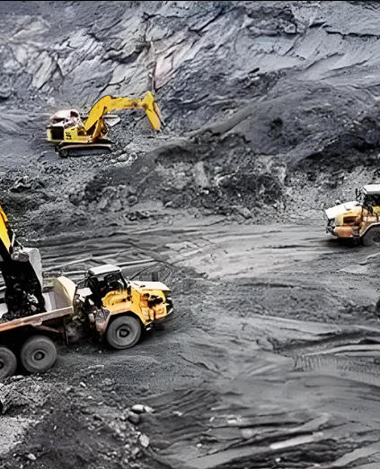

Product identity and grade
State exact identity, grade, concentration or form, process role, quantity, packing, destination and documents.
Mining chemical · Alkalinity and pH modifier
Soda ash is sodium carbonate used as an alkalinity source and pH modifier in selected flotation, leaching, refining and process-water operations.

Product image · confirm grade and packaging when ordering
Share exact chemistry, process role, ore or water context, quantity, destination and documents.
ApplicationOre and flowsheet specific
SpecificationAvailable privately from sales
ValidationLaboratory and pilot work required
ControlsSDS and site engineering required
Direct product answer
Soda ash is sodium carbonate used as an alkalinity source and pH modifier in selected flotation, leaching, refining and process-water operations.
Performance depends on the exact commercial grade, mineralogy, liberation, pulp and recycle-water chemistry, upstream and downstream reagents, equipment and control strategy. This page supports procurement screening and is not a plant operating instruction.
Procurement checklist
Compare the offered grade, application requirements and commercial terms before requesting a sample or placing an order.
State exact identity, grade, concentration or form, process role, quantity, packing, destination and documents.
Compare private specification, active or assay basis, representative COA, transport classification, Incoterm and lead time.
Share mineralogy, flowsheet stage, water chemistry, existing reagent suite, target response and test protocol.
Request current SDS, private specification or TDS, methods, batch COA, traceability and source-specific documents.
Process screening
These are testwork areas—not universal recommendations, dosage instructions, recovery guarantees or permit approvals.
Identify the exact process duty described for this material. Confirm its composition and suitability for that duty before starting a source-comparison trial.
Where the material is proposed for slurry conditioning, define the mechanism and acceptance test first. Assess rheology, separation and downstream effects using representative ore and water.
Confirm that the proposed material fits the identified deposit or scale-control objective. Assess equipment compatibility and the fate of treatment residuals.
Provide the process step, feed composition and product limits. Evaluate the offered grade only against that defined duty and the site's operating constraints.
Technical selection
Identify the individual compound or blend, active content and physical form. A family name is not a complete purchase specification.
State the required reagent function and equipment conditions. Assess the proposed grade within the existing flowsheet and reagent program.
Specify the relevant assay, moisture, particle or concentration basis. Include impurities that affect the concentrate, electrolyte or recycled water.
Review the current SDS and route-specific transport requirements. Confirm site controls for worker exposure, introduced constituents and the relevant waste streams.
Private technical documentation
Bespring Chemical does not publish product specifications for this mining chemical online. Contact sales for the current source-specific specification or TDS and confirm its revision, methods and acceptance criteria.
Request the signed current specification or TDS, SDS, analytical methods, representative COA and batch COA.
Confirm hazard and transport classification, compatible packing, storage segregation, shelf life and emergency controls.
Review the US EPA hardrock-mining source book, the EPA ore-mining and dressing technical document, USGS mineral-processing context and NIH PubChem.
Mining-process note: A raw-material identity does not establish recovery, selectivity, dosage or environmental acceptability. Use representative metallurgical or water testwork, qualified engineering, site permits and monitored residue, effluent, air and worker controls.
Storage and handling
Mining buyer questions
Soda ash is sodium carbonate used as an alkalinity source and pH modifier in selected flotation, leaching, refining and process-water operations. Suitability must be established for the specific ore, water, flowsheet and site.
CAS 497-19-8; Na2CO3; Light or dense anhydrous grade—confirm. State the exact chemistry, grade, active concentration, physical form and critical impurity limits.
Bespring Chemical does not publish specifications for this mining chemical online. Contact sales for the current source-specific specification or TDS, methods and representative COA.
No. Reagent selection, dosage, conditioning order and control limits require representative mineralogical, metallurgical or water-treatment testwork and qualified site engineering.
Provide the exact identity, grade or concentration, process role, ore or water context, critical limits, quantity, packing, destination, documents, Incoterm and delivery date.
Content updated 2026-09-13.
Related sourcing
Browse water-treatment, leaching, flotation, smelting and refining chemical families.
Discuss a private specification, documents, sample and commercial requirements.
Review sourcing and export support for international chemical procurement.
Specification-led mining supply
Share identity, grade or concentration, process role, ore or water context, critical limits, quantity, packing, destination and documents.
Tell us your grade and destination market so we can confirm which documents are available for your order.
An external reference is not a batch certificate or a Bespring product specification.